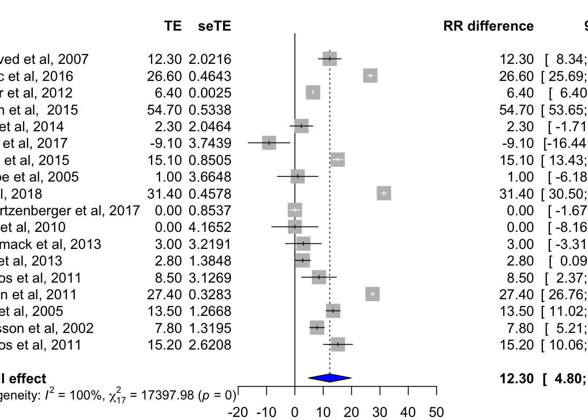
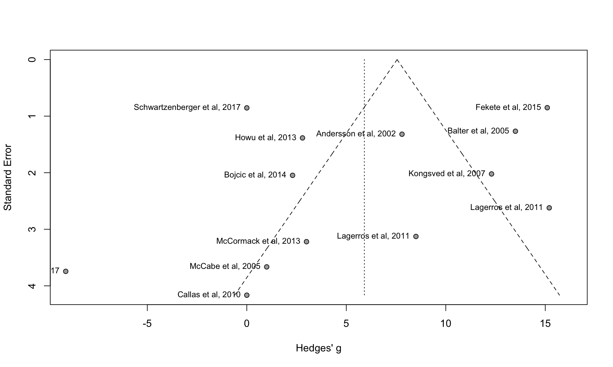
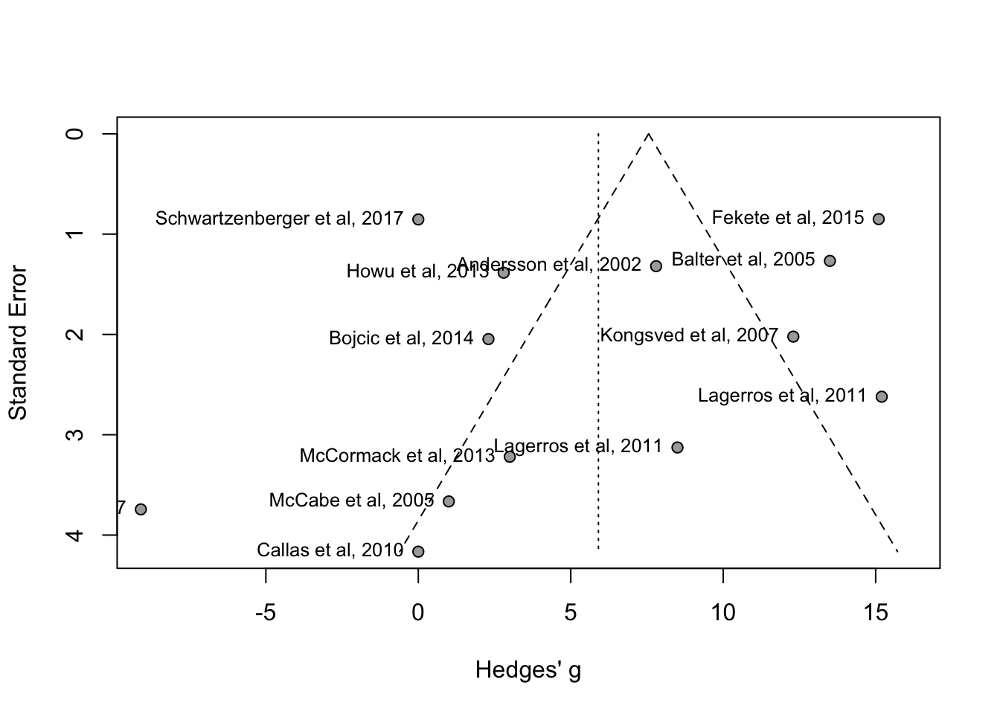

Response Rate Meta-analysis
Mohamed
22/01/2019
Last updated: 2019-01-23
workflowr checks: (Click a bullet for more information)-
✔ R Markdown file: up-to-date
Great! Since the R Markdown file has been committed to the Git repository, you know the exact version of the code that produced these results.
-
✔ Environment: empty
Great job! The global environment was empty. Objects defined in the global environment can affect the analysis in your R Markdown file in unknown ways. For reproduciblity it’s best to always run the code in an empty environment.
-
✔ Seed:
set.seed(20190123)The command
set.seed(20190123)was run prior to running the code in the R Markdown file. Setting a seed ensures that any results that rely on randomness, e.g. subsampling or permutations, are reproducible. -
✔ Session information: recorded
Great job! Recording the operating system, R version, and package versions is critical for reproducibility.
-
Great! You are using Git for version control. Tracking code development and connecting the code version to the results is critical for reproducibility. The version displayed above was the version of the Git repository at the time these results were generated.✔ Repository version: 7c0ba6f
Note that you need to be careful to ensure that all relevant files for the analysis have been committed to Git prior to generating the results (you can usewflow_publishorwflow_git_commit). workflowr only checks the R Markdown file, but you know if there are other scripts or data files that it depends on. Below is the status of the Git repository when the results were generated:
Note that any generated files, e.g. HTML, png, CSS, etc., are not included in this status report because it is ok for generated content to have uncommitted changes.Ignored files: Ignored: .DS_Store Ignored: .Rhistory Ignored: .Rproj.user/ Ignored: analysis/.DS_Store Ignored: mohamedyusuf/ Ignored: output/.DS_Store Unstaged changes: Modified: Responserate_mres.Rproj
Expand here to see past versions:
Get data into R
Here we will install and run all the relelvant packages as well upload our data.
Install dependencies
# Install dependencces
library(prettydoc)
library(readxl)
library(meta)
library(metafor)
library(dplyr)Load the data into R
# Import the data
RR_data <- readxl::read_xlsx("Data/RR_data_3.xlsx")
# Inspect the data
str(RR_data)Classes 'tbl_df', 'tbl' and 'data.frame': 18 obs. of 20 variables:
$ study : chr "Kongsved et al, 2007" "Mlikotic et al, 2016" "Sinclair et al, 2012" "Palmen et al, 2015" ...
$ type : chr "Paper Vs Web" "Paper Vs Web" "Paper Vs Web" "Paper Vs Web" ...
$ year : num 2007 2016 2012 2015 2014 ...
$ samples : num 533 1192 26500 48 2316 ...
$ paper_surv : num 76.5 57.7 9.2 88 67 78.3 57 87.2 62.3 42 ...
$ dig_survey : num 64.2 31.1 2.8 33.3 64.7 87.4 41.9 86.2 30.9 42 ...
$ rr_diff : num 12.3 26.6 6.4 54.7 2.3 ...
$ rr_var : num 2.0216 0.4643 0.0025 0.5338 2.0464 ...
$ weight : num 0.008543 0.019105 0.424727 0.000769 0.03712 ...
$ rr_weighted : num 0.1051 0.5082 2.7183 0.0421 0.0854 ...
$ var_weighted : num 0.01727 0.008871 0.001064 0.000411 0.07596 ...
$ paper_missing : num 36.6 NA 0.4 NA NA 21.1 NA 12 NA NA ...
$ dig_missing : num 2.2 NA 0 NA NA 10.1 NA 17 NA NA ...
$ miss_diff : num 34.4 NA 0.4 NA NA 11 NA -5 NA NA ...
$ miss_var : num -2.16 NA 9.06e-06 NA NA ...
$ miss_diff_weighted: num 0.294 NA 0.17 NA NA ...
$ miss_var_weighted : num -1.84e-02 NA 3.85e-06 NA NA ...
$ rand_assign : chr "No" "No" "Yes" "Yes" ...
$ incentives : chr "No" "No" "Yes" "No" ...
$ reminder : chr "Yes" "No" "Yes" "Yes" ...Label some of the categorical data
# make lables for the incentive levels
RR_data$incentives <- factor(RR_data$incentives,
levels = c("Yes", "No"),
labels = c("With Incentives", "Without Incentives"))
# make labels for the reminder levels
RR_data$reminder <- factor(RR_data$reminder,
levels = c("Yes", "No"),
labels = c("Reminded", "Not Reminded"))
# make labels for random aissginment levels
RR_data$rand_assign <- factor(RR_data$rand_assign,
levels = c("Yes", "No"),
labels = c("Randomly Assigned", "Not Randomly Assigned"))Random Effects Models
Here we will create effect size and sample variance for the model. After that we will input these variables into the model.
make effect size variable
# effect size
yi <- RR_data$rr_diff
# sample varience
vi <- RR_data$rr_varBuild Random effects model using the metagen function
# RE Model
RE_model<-metagen(yi,
vi,
label.e = "Paper Survey",
label.c = "Digital Survey",
data=RR_data,
studlab=paste(study),
comb.fixed = F,
comb.random = TRUE,
hakn = TRUE,
prediction=F,
sm="SMD")Forest Plot
We will now produce a forest plot using our RE model and then look at the statistical output of RE Model
# forest plot
forest(RE_model,
xlim = c(-20,50),
rightlabs = c("RR difference","95% CI"),
leftlabs = c("Author(s) and Year "),
just.addcols.left = "left",
rightcols=c("effect", "ci"),
pooled.totals = T,
label.right="Favours Paper", col.label.right="dark red",
label.left="Favours Digital", col.label.left="dark green",
smlab = "",
col.by = "black",
text.random = "Overall effect",
print.tau2 = FALSE,
print.byvar =F,
calcwidth.hetstat = T,
col.diamond = "blue",
col.diamond.lines = "black",
digits.sd = 2,
print.I2 = TRUE,
print.Q = TRUE)
Expand here to see past versions of unnamed-chunk-4-1.png:
| Version | Author | Date |
|---|---|---|
| 06682ef | Mohamed Yusuf | 2019-01-23 |
# RE Model ouput
summary(RE_model)Number of studies combined: k = 18
SMD 95%-CI t p-value
Random effects model 12.3021 [4.8043; 19.7999] 3.46 0.0030
Quantifying heterogeneity:
tau^2 = 313.7656; H = 31.99 [30.81; 33.22]; I^2 = 99.9% [99.9%; 99.9%]
Test of heterogeneity:
Q d.f. p-value
17397.98 17 0
Details on meta-analytical method:
- Inverse variance method
- DerSimonian-Laird estimator for tau^2
- Hartung-Knapp adjustment for random effects modelOur model gives an overall weighted response rate difference of 12.30% (95% CI, 4.80 to 19.80), between paper and online surveys. However, the heterogeneity of the studies included was very significant with a Q score of 17,397 (I2 = 100%; p = 0.00). This substantial heterogeneity warrants further investigation.
Between-study Heterogeneity
To detect influential studies that may be pushing the effect of our analysis into one direction. We applied Viechtbauer and Cheung’s (2010) method for detecting statistical outliers. This involved categorising studies whose confidence interval did not overlap with the overall effect confidence interval as outliers (Viechtbauer and Cheung, 2010).
Detecting outliers
In order to do this we must create an R package that aids us in spotting these outliers based on there confidence interval
# Make a function to aid detection outliers
spot.outliers.random<-function(data){
data<-data
Author<-data$studlab
lowerci<-data$lower
upperci<-data$upper
m.outliers<-data.frame(Author,lowerci,upperci)
te.lower<-data$lower.random
te.upper<-data$upper.random
dplyr::filter(m.outliers,upperci < te.lower)
dplyr::filter(m.outliers,lowerci > te.upper)
}
# apply outlier function to our RE model
spot.outliers.random(data=RE_model) Author lowerci upperci
1 Mlikotic et al, 2016 25.68991 27.51009
2 Palmen et al, 2015 53.65379 55.74621
3 Le et al, 2018 30.50266 32.29734
4 Kallmen et al, 2011 26.75652 28.04348Based on our outlier function, four studies stand out greatly as their lower-bound CI is greater than the upper bound CI of our pooled effect size. These studies are Mlikotic et al, 2016, Palmen et al, 2015, Le et al, 2018 and Kallmen et al, 2011.
Influence analysis
To analyse the individual impact on heterogeneity, each study was removed from the meta-analysis one at a time, and the individual influence on I2 was estimated. In addition, to this a diagnostic plot called Baujat plot (ref) inspecting overall heterogeneity was conducted. Baujat plot assess the contribution of each study by overall heterogeneity as measured by Cochran’s Q, and its influence on the pooled effect size on the vertical axis.
# make an influence function
influence.analysis<-function(data, method.tau, hakn){
influence.data<-data
TE<-data$TE
seTE<-data$seTE
method.tau<-method.tau
hakn<-hakn
if(hakn == TRUE){
res <- rma(yi=TE, sei=seTE, measure="ZCOR",
data=influence.data,
method = paste(method.tau),
test="knha")
res
inf <- influence(res)
influence.data<-metainf(data)
influence.data$I2<-format(round(influence.data$I2,2),nsmall=2)
plot(inf)
baujat(data, yscale=10, xmin=10, ymin=1,
pos=2, xlim=c(-1500, 4200), cex.studlab = 0.8)
forest(influence.data,
sortvar=I2,
rightcols = c("TE","ci","I2"),
smlab = "Sorted by I-squared")
forest(influence.data,
sortvar=TE,
rightcols = c("TE","ci","I2"),
smlab = "Sorted by Effect size")
} else {
res <- rma(yi=TE, sei=seTE, measure="ZCOR",
data=influence.data,
method = paste(method.tau))
res
inf <- influence(res)
influence.data<-metainf(data)
influence.data$I2<-format(round(influence.data$I2,2),nsmall=2)
plot(inf, yscale=10, xmin=10, ymin=1,
pos=2, xlim=c(1500, 4200), cex.studlab = 0.8)
baujat(data, pch = 10)
forest(influence.data,
sortvar=I2,
rightcols = c("TE","ci","I2"),
smlab = "Sorted by I-squared")
forest(influence.data,
sortvar=TE,
rightcols = c("TE","ci","I2"),
smlab = "Sorted by Effect size")
}}
influence.analysis(data=RE_model,method.tau = "SJ", hakn = TRUE)
Expand here to see past versions of unnamed-chunk-6-1.png:
| Version | Author | Date |
|---|---|---|
| 06682ef | Mohamed Yusuf | 2019-01-23 |
Expand here to see past versions of unnamed-chunk-6-2.png:
| Version | Author | Date |
|---|---|---|
| 06682ef | Mohamed Yusuf | 2019-01-23 |
Expand here to see past versions of unnamed-chunk-6-3.png:
| Version | Author | Date |
|---|---|---|
| 06682ef | Mohamed Yusuf | 2019-01-23 |
Expand here to see past versions of unnamed-chunk-6-4.png:
| Version | Author | Date |
|---|---|---|
| 06682ef | Mohamed Yusuf | 2019-01-23 |
Based on our Baujat and influential analysis, five studies appear to stand out greatly, four of which we already have come across in our initial outlier analysis.
Mlikotic et al, 2016, Sinclair et al, 2012 Palmen et al, 2015, Le et al, 2018 and Kallmen et al, 2011.
Sensitivity analysis
We will now conduct a sensitivity analysis in which the five identified outlier studies are excluded.
# remove outliers
RE.model.outliers<-update.meta(RE_model,
subset = -c(2,3,4,9,15))
# re-run forest plot
forest(RE.model.outliers,
xlim = c(-20,60),
rightlabs = c("RR difference","95% CI"),
leftlabs = c("Author(s) and Year "),
just.addcols.left = "left",
rightcols=c("effect", "ci"),
pooled.totals = T,
label.right="Favours Paper", col.label.right="dark red",
label.left="Favours Digital", col.label.left="dark green",
smlab = "",
col.by = "black",
text.random = "Overall effect",
print.tau2 = FALSE,
print.byvar =F,
calcwidth.hetstat = T,
col.diamond = "blue",
col.diamond.lines = "black",
digits.sd = 2,
print.I2 = TRUE,
print.Q = TRUE)
Expand here to see past versions of unnamed-chunk-7-1.png:
| Version | Author | Date |
|---|---|---|
| 06682ef | Mohamed Yusuf | 2019-01-23 |
# RE Model ouput
summary(RE.model.outliers)Number of studies combined: k = 13
SMD 95%-CI t p-value
Random effects model 5.9075 [1.5899; 10.2250] 2.98 0.0115
Quantifying heterogeneity:
tau^2 = 49.4838; H = 4.47 [3.77; 5.31]; I^2 = 95.0% [92.9%; 96.5%]
Test of heterogeneity:
Q d.f. p-value
239.85 12 < 0.0001
Details on meta-analytical method:
- Inverse variance method
- DerSimonian-Laird estimator for tau^2
- Hartung-Knapp adjustment for random effects modelSubsequent to the removal of the five outlier studies, the Q score of went down to 239.85 (I2 = 95%; p = 0.0001). That is a drastic drop from the previous Q score which was 17, 397. This further confirms that the outliers were considerably adding to the studies heterogeneity.
In addition to this, the new updated model has an effect size of 5.9% and a 95% confidence interval between 3.77 and 5.31; this confidence interval is much narrower than the confidence interval of the previous interval, suggesting that the previous studies were inflating the effect size.
Subgroup analysis
Now we want to know study specfic features and effects on our meta-analysis. In order to do this we will do subgroup analysis.
Type of surveys
Analysis looking at whether the type of study comparisons has impact on the effect size
# build a REM for between-subgroup-differences in random assignments
type.subgroup<-update.meta(RE.model.outliers,
byvar = RR_data$type,
comb.random = TRUE,
comb.fixed = FALSE)
# forest plot of sub-group RE Model
forest(type.subgroup,
xlim = c(-20,30),
rightlabs = c("RR difference","95% CI"),
leftlabs = c("Author(s) and Year "),
just.addcols.left = "left",
rightcols=c("effect", "ci"),
pooled.totals = T,
label.right="Favours Paper", col.label.right="dark red",
label.left="Favours Digital", col.label.left="dark green",
smlab = "",
col.by = "black",
text.random = "Overall effect",
print.tau2 = FALSE,
print.byvar =F,
fs.test.subgroup = 3,
calcwidth.hetstat = T,
calcwidth.tests = T,
col.diamond = " dark blue",
col.diamond.lines = "black",
digits.sd = 2,
print.I2 = TRUE,
print.Q = TRUE)
Expand here to see past versions of unnamed-chunk-8-1.png:
| Version | Author | Date |
|---|---|---|
| 06682ef | Mohamed Yusuf | 2019-01-23 |
# RE Model ouput
summary(type.subgroup)Number of studies combined: k = 13
SMD 95%-CI t p-value
Random effects model 5.9075 [1.5899; 10.2250] 2.98 0.0115
Quantifying heterogeneity:
tau^2 = 49.4838; H = 4.47 [3.77; 5.31]; I^2 = 95.0% [92.9%; 96.5%]
Quantifying residual heterogeneity:
H = 4.58 [3.84; 5.47]; I^2 = 95.2% [93.2%; 96.7%]
Test of heterogeneity:
Q d.f. p-value
239.85 12 < 0.0001
Results for subgroups (random effects model):
k SMD 95%-CI Q tau^2 I^2
type = Paper Vs Web 12 5.1429 [ 0.7754; 9.5104] 231.11 49.5912 95.2%
type = Paper Vs SMS 1 15.2000 [10.0632; 20.3368] 0.00 -- --
Test for subgroup differences (random effects model):
Q d.f. p-value
Between groups 9.36 1 0.0022
Details on meta-analytical method:
- Inverse variance method
- DerSimonian-Laird estimator for tau^2
- Hartung-Knapp adjustment for random effects modelOur surveys have various different features. One othe features
Random assignment
# build a REM for between-subgroup-differences in random assignments
rand.subgroup<-update.meta(RE.model.outliers,
byvar=rand_assign,
comb.random = TRUE,
comb.fixed = FALSE)
RR_data$rand_assign [1] Not Randomly Assigned Not Randomly Assigned Randomly Assigned
[4] Randomly Assigned Not Randomly Assigned Not Randomly Assigned
[7] Randomly Assigned Randomly Assigned Randomly Assigned
[10] Randomly Assigned Not Randomly Assigned Randomly Assigned
[13] Randomly Assigned Randomly Assigned Randomly Assigned
[16] Randomly Assigned Not Randomly Assigned Randomly Assigned
Levels: Randomly Assigned Not Randomly Assigned# forest plot of sub-group RE Model
forest(rand.subgroup,
xlim = c(-20,30),
rightlabs = c("RR difference","95% CI"),
leftlabs = c("Author(s) and Year "),
just.addcols.left = "left",
rightcols=c("effect", "ci"),
pooled.totals = T,
label.right="Favours Paper", col.label.right="dark red",
label.left="Favours Digital", col.label.left="dark green",
smlab = "",
col.by = "black",
text.random = "Overall effect",
print.tau2 = FALSE,
print.byvar =F,
calcwidth.hetstat = T,
calcwidth.tests = T,
col.diamond = "blue",
col.diamond.lines = "black",
digits.sd = 2,
print.I2 = TRUE,
print.Q = TRUE)
Expand here to see past versions of unnamed-chunk-9-1.png:
| Version | Author | Date |
|---|---|---|
| 06682ef | Mohamed Yusuf | 2019-01-23 |
# RE Model ouput
summary(rand.subgroup)Number of studies combined: k = 13
SMD 95%-CI t p-value
Random effects model 5.9075 [1.5899; 10.2250] 2.98 0.0115
Quantifying heterogeneity:
tau^2 = 49.4838; H = 4.47 [3.77; 5.31]; I^2 = 95.0% [92.9%; 96.5%]
Quantifying residual heterogeneity:
H = 4.64 [3.90; 5.53]; I^2 = 95.4% [93.4%; 96.7%]
Test of heterogeneity:
Q d.f. p-value
239.85 12 < 0.0001
Results for subgroups (random effects model):
k SMD 95%-CI Q
rand_assign = Randomly Assigned 8 7.5010 [ 2.0332; 12.9689] 204.06
rand_assign = Not Randomly Assigned 5 3.3750 [-6.5332; 13.2831] 33.12
tau^2 I^2
rand_assign = Randomly Assigned 60.1574 96.6%
rand_assign = Not Randomly Assigned 36.2554 87.9%
Test for subgroup differences (random effects model):
Q d.f. p-value
Between groups 0.94 1 0.3319
Details on meta-analytical method:
- Inverse variance method
- DerSimonian-Laird estimator for tau^2
- Hartung-Knapp adjustment for random effects modelIncentives
# build a REM for between-subgroup-differences in random assignments
incent.subgroup<-update.meta(RE.model.outliers,
byvar=incentives,
comb.random = TRUE,
comb.fixed = FALSE)
# forest plot of sub-group RE Model
forest(incent.subgroup,
xlim = c(-20,30),
rightlabs = c("RR difference","95% CI"),
leftlabs = c("Author(s) and Year "),
just.addcols.left = "left",
rightcols=c("effect", "ci"),
pooled.totals = T,
label.right="Favours Paper", col.label.right="dark red",
label.left="Favours Digital", col.label.left="dark green",
smlab = "",
col.by = "black",
text.random = "Overall effect",
print.tau2 = FALSE,
print.byvar =F,
calcwidth.hetstat = T,
col.diamond = "blue",
col.diamond.lines = "black",
digits.sd = 2,
print.I2 = TRUE,
print.Q = TRUE)
Expand here to see past versions of unnamed-chunk-10-1.png:
| Version | Author | Date |
|---|---|---|
| 06682ef | Mohamed Yusuf | 2019-01-23 |
# RE Model ouput
summary(incent.subgroup)Number of studies combined: k = 13
SMD 95%-CI t p-value
Random effects model 5.9075 [1.5899; 10.2250] 2.98 0.0115
Quantifying heterogeneity:
tau^2 = 49.4838; H = 4.47 [3.77; 5.31]; I^2 = 95.0% [92.9%; 96.5%]
Quantifying residual heterogeneity:
H = 4.12 [3.41; 4.97]; I^2 = 94.1% [91.4%; 96.0%]
Test of heterogeneity:
Q d.f. p-value
239.85 12 < 0.0001
Results for subgroups (random effects model):
k SMD 95%-CI Q
incentives = With Incentives 5 2.2865 [-8.6706; 13.2436] 70.08
incentives = Without Incentives 8 7.6550 [ 2.8949; 12.4151] 116.60
tau^2 I^2
incentives = With Incentives 124.0739 94.3%
incentives = Without Incentives 36.1493 94.0%
Test for subgroup differences (random effects model):
Q d.f. p-value
Between groups 1.47 1 0.2256
Details on meta-analytical method:
- Inverse variance method
- DerSimonian-Laird estimator for tau^2
- Hartung-Knapp adjustment for random effects modelReminder
# build a REM for between-subgroup-differences in random assignments
remin.subgroup<-update.meta(RE.model.outliers,
byvar=reminder,
bylab = c("With Incentives", "Without incentives"),
comb.random = TRUE,
comb.fixed = FALSE)
# forest plot of sub-group RE Model
forest(remin.subgroup,
xlim = c(-20,30),
label.right="Favours Paper", col.label.right="dark red",
label.left="Favours Digital", col.label.left="dark green",
smlab = "",
col.by = "black",
text.random = "Overall effect",
print.tau2 = FALSE,
print.byvar =F,
calcwidth.hetstat = T,
col.diamond = "blue",
col.diamond.lines = "black",
digits.sd = 2,
print.I2 = TRUE,
print.Q = TRUE)
Expand here to see past versions of unnamed-chunk-11-1.png:
| Version | Author | Date |
|---|---|---|
| 06682ef | Mohamed Yusuf | 2019-01-23 |
# RE Model ouput
summary(remin.subgroup)Number of studies combined: k = 13
SMD 95%-CI t p-value
Random effects model 5.9075 [1.5899; 10.2250] 2.98 0.0115
Quantifying heterogeneity:
tau^2 = 49.4838; H = 4.47 [3.77; 5.31]; I^2 = 95.0% [92.9%; 96.5%]
Quantifying residual heterogeneity:
H = 3.62 [2.95; 4.43]; I^2 = 92.4% [88.5%; 94.9%]
Test of heterogeneity:
Q d.f. p-value
239.85 12 < 0.0001
Results for subgroups (random effects model):
k SMD 95%-CI Q
With Incentives = Reminded 9 7.4705 [ 1.4530; 13.4880] 118.77
Without incentives = Not Reminded 4 2.5547 [-3.8179; 8.9272] 25.04
tau^2 I^2
With Incentives = Reminded 42.1454 93.3%
Without incentives = Not Reminded 21.8240 88.0%
Test for subgroup differences (random effects model):
Q d.f. p-value
Between groups 2.23 1 0.1350
Details on meta-analytical method:
- Inverse variance method
- DerSimonian-Laird estimator for tau^2
- Hartung-Knapp adjustment for random effects modelYear
Here will use metaregression to really see if publication year impacts our effect size
year.metareg<-metareg(RE.model.outliers, year)
year.metareg
Mixed-Effects Model (k = 13; tau^2 estimator: DL)
tau^2 (estimated amount of residual heterogeneity): 53.3806 (SE = 34.4554)
tau (square root of estimated tau^2 value): 7.3062
I^2 (residual heterogeneity / unaccounted variability): 94.87%
H^2 (unaccounted variability / sampling variability): 19.50
R^2 (amount of heterogeneity accounted for): 0.00%
Test for Residual Heterogeneity:
QE(df = 11) = 214.5499, p-val < .0001
Test of Moderators (coefficient(s) 2):
F(df1 = 1, df2 = 11) = 1.8329, p-val = 0.2029
Model Results:
estimate se tval pval ci.lb ci.ub
intrcpt 1105.8114 812.4445 1.3611 0.2007 -682.3668 2893.9897
year -0.5470 0.4041 -1.3538 0.2029 -1.4364 0.3423
---
Signif. codes: 0 '***' 0.001 '**' 0.01 '*' 0.05 '.' 0.1 ' ' 1 bubble(year.metareg,
ylim = c(-20, 20),
xlim = c(1998, 2020),
xlab = "Publication Year",
col.line = "blue",
studlab = F)
Expand here to see past versions of unnamed-chunk-12-1.png:
| Version | Author | Date |
|---|---|---|
| 06682ef | Mohamed Yusuf | 2019-01-23 |
Publication bias
Funnel plot
Here will see if our results are impacted by publication
funnel(RE.model.outliers, xlab="Hedges' g", studlab = T)
Expand here to see past versions of unnamed-chunk-13-1.png:
| Version | Author | Date |
|---|---|---|
| 06682ef | Mohamed Yusuf | 2019-01-23 |
We can see that some studies appear to fall outside of teh funnel, implying that there is a high likelyhood of publication bias within our pool of studies.
Session information
sessionInfo()R version 3.5.2 (2018-12-20)
Platform: x86_64-apple-darwin15.6.0 (64-bit)
Running under: macOS Mojave 10.14
Matrix products: default
BLAS: /Library/Frameworks/R.framework/Versions/3.5/Resources/lib/libRblas.0.dylib
LAPACK: /Library/Frameworks/R.framework/Versions/3.5/Resources/lib/libRlapack.dylib
locale:
[1] en_GB.UTF-8/en_GB.UTF-8/en_GB.UTF-8/C/en_GB.UTF-8/en_GB.UTF-8
attached base packages:
[1] stats graphics grDevices utils datasets methods base
other attached packages:
[1] bindrcpp_0.2.2 dplyr_0.7.8 metafor_2.0-0 Matrix_1.2-15
[5] meta_4.9-4 readxl_1.2.0 prettydoc_0.2.1
loaded via a namespace (and not attached):
[1] Rcpp_1.0.0 bindr_0.1.1 knitr_1.21
[4] whisker_0.3-2 magrittr_1.5 workflowr_1.1.1
[7] tidyselect_0.2.5 lattice_0.20-38 R6_2.3.0
[10] rlang_0.3.1 stringr_1.3.1 tools_3.5.2
[13] grid_3.5.2 nlme_3.1-137 xfun_0.4
[16] R.oo_1.22.0 git2r_0.24.0 htmltools_0.3.6
[19] assertthat_0.2.0 yaml_2.2.0 digest_0.6.18
[22] rprojroot_1.3-2 tibble_2.0.1 crayon_1.3.4
[25] purrr_0.2.5 R.utils_2.7.0 glue_1.3.0
[28] evaluate_0.12 rmarkdown_1.11 stringi_1.2.4
[31] pillar_1.3.1 compiler_3.5.2 cellranger_1.1.0
[34] backports_1.1.3 R.methodsS3_1.7.1 pkgconfig_2.0.2 This reproducible R Markdown analysis was created with workflowr 1.1.1